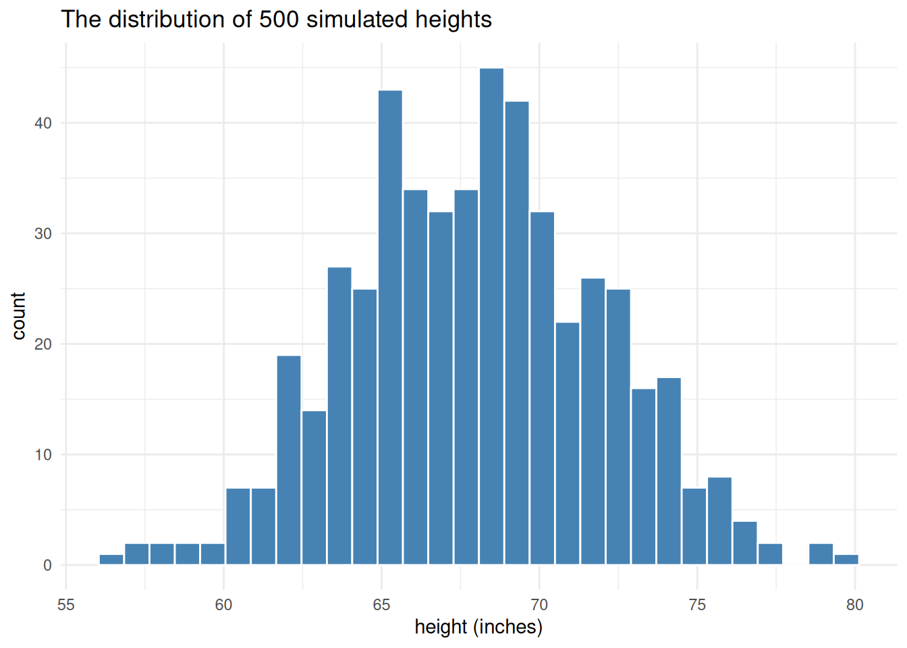
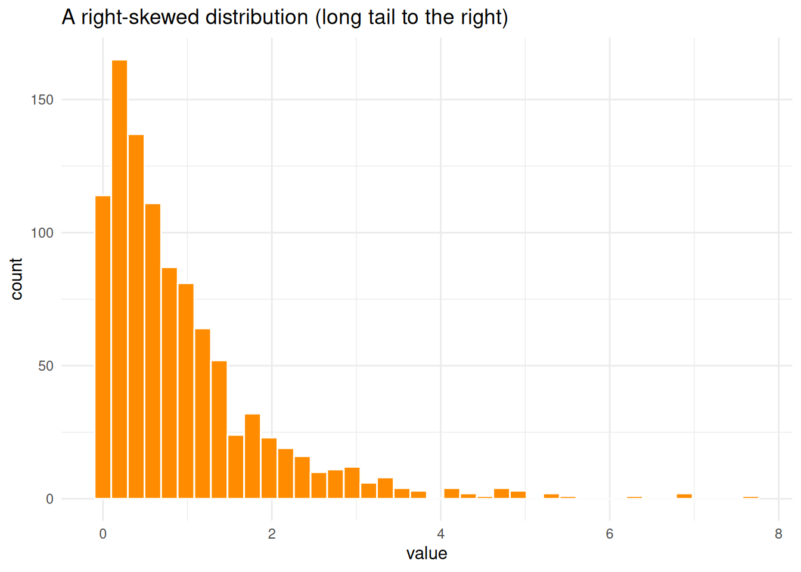
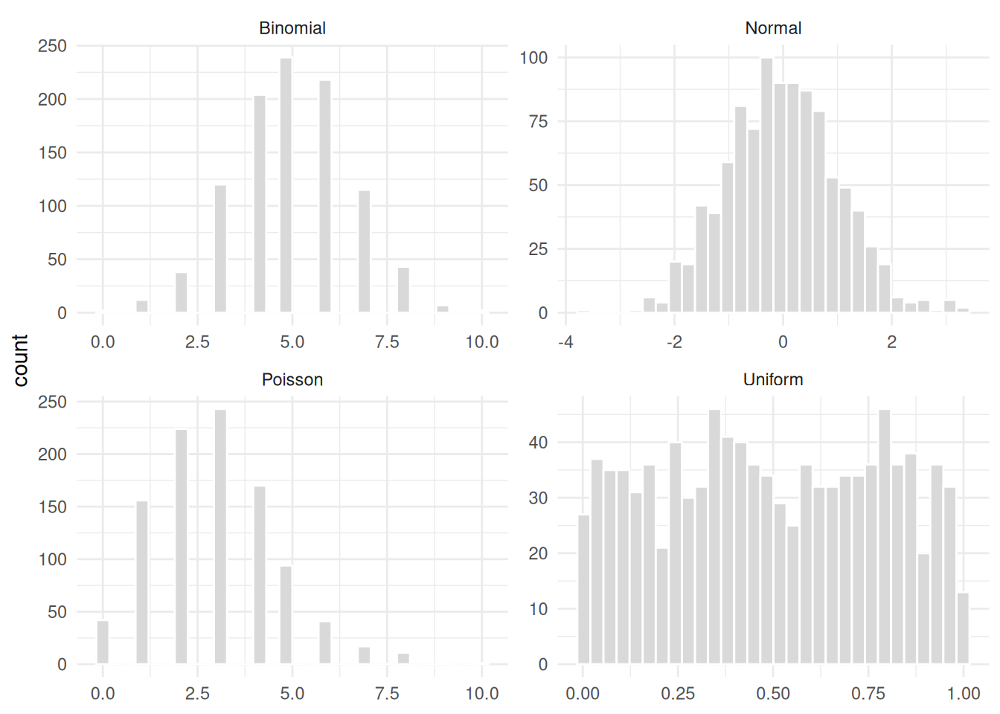
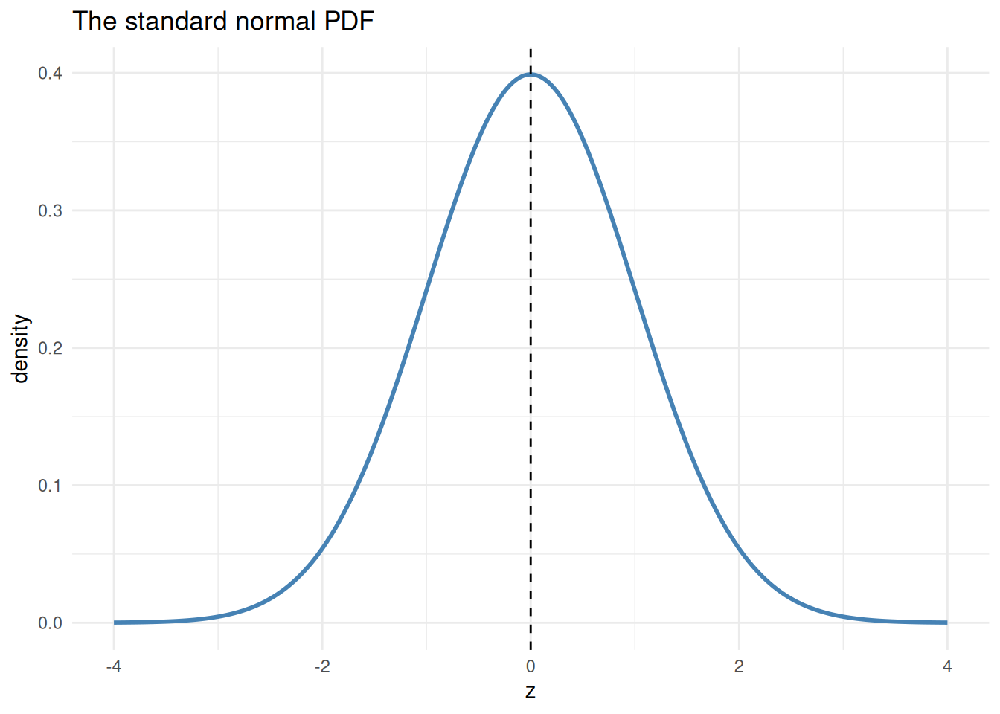

Time to play in data land! We began our journey with a promise to help you understand and quantify your uncertainty. Now, we shift to the heart and soul of data - the distribution. Every variable has a distribution, and understanding that distribution is key to understanding the data. We will explore the most common distributions and how to use them to make sense of your data. Let’s get started, shall we?
1.1 Learning Objectives
Understand the concept of a variable and how they may be represented in data.
Learn about the most common distributions and how to use them.
Understand the concept of a probability density function and how to use it.
Learn how to use distributions to make predictions and quantify uncertainty.
1.2 Variables
Everything we wish to understand about people or things comes in the form of a variable. If I want to know why people like chocolate ice cream, I must assign some form of numerical value to “like” such that I can learn from my observations. Why? Learning via these methods require data. Each variable is a set of observations. We assign numbers to observations and these observations serve as our data. Each variable is unique. Some variables contain data that represent a singular characteristic of a person or thing; other variables contain data that represent multiple characteristics. These characteristics we often call constructs in psychological science. From this point forward, we shall refer to the underlying characteristic that we measure as the construct.
Let’s examine this a bit more closely. Consider two variables height and weight. Height is a variable that contains data representing a singular characteristic of a person - the length of the person’s body when standing. Changes in height measures a singular characteristic of a person that can be altered only by skeletal growth/decay. Weight, on the other hand, contains data representing a single characteristic (mass) but determined by many contributing factors (e.g., water, fat, muscle, bone, etc.). Combined, height and weight make a composite variable called Body Mass Index (BMI) - an often used but derided predictor of health and well-being.
Singular Construct
Multiple Constructs
Singular Cause
IDEAL (Height)
Less IDEAL (Weight)
Multiple Cause
Most Common (g)
REALLY BAD (BMI)
In the table above, we see that the ideal variable is one that contains data representing a singular characteristic of a person and is determined by a singular cause. Similarly, we see BMI labeled as “REALLY BAD.” These are abstractions right now but they become important as we delve into psychological science and the uncertainty around our constructs.
1.2.1 Types of Variables
We have many types of variables to choose from when we begin our journey into data land. Each type of variable has its own unique characteristics and uses. Let’s explore the most common types of variables. Decades ago, psychological scientists were hamstrung by W.W. Stevens levels of measurement. Stevens argued that there were four levels of measurement: nominal, ordinal, interval, and ratio. These levels of measurement were used to determine the permissible analyses based solely on the logic of arithmetic. Times have changed but arithmetic remains the same. The argument, however, that the level of measurement dictates the analysis is simply untrue. We may do whatever analysis we choose. Which ones make sense depends upon a whole host of factors that we address in this book. So, keep reading. Below is a much easier taxonomy for understanding variables.
1.2.1.1 Continuous Variables
Continuous variables are those that can take on any value within a range. These variables are often measured and can be divided into smaller and smaller units. Examples of continuous variables include height, weight, and temperature. We care not only about the integer values (e.g., 5 feet) but also the decimal values as well (e.g., 5.5 feet). Continuous variables are the most commonly assumed type of variable in psychological science. We emphasize assumed here because we see many instances where continuity - that is, the continuous nature of a variable - makes no sense and yet, in those instances, are treated as such. EGAD! What are we to do? Well, we must learn. So, a continuous variable is a variable containing any value between a range of possible values including negative and positive infinity.
1.2.1.2 Discrete Variables
Discrete variables are the countable cousins of continuous variables. They take on separated, distinct values - usually whole numbers - with nothing in between. The number of children in a family, the number of times you checked your phone today, the number of correct answers on a quiz: all discrete. You can have 2 children or 3 children, but never 2.4 of them. The gap matters. A Likert scale is the classic troublemaker: a 0-to-5 item offers only the integers 0, 1, 2, 3, 4, 5, so it is technically discrete, yet we routinely treat it as continuous - a convenience we return to later. Much of the mischief in applied statistics comes from treating a discrete variable as if it were continuous (or the reverse), so always ask yourself: can the thing between two values actually exist?
1.2.1.3 Categorical Variables
Categorical variables sort observations into buckets that have no inherent numerical order - think of pet (dog, cat, mouse, fish), eye color, political party, or ice-cream flavor. Because the values are non-numeric, they must be converted into numbers at some point before we can compute with them; we can code them (1 = chocolate, 2 = vanilla) for convenience, but those numbers are labels, not quantities - vanilla is not “twice” chocolate. A categorical variable with exactly two buckets (yes/no, treatment/control, alive/dead) is called dichotomous or binary, and it turns out to be one of the most useful variables in all of statistics, as we will see when point-biserial correlation and ANOVA arrive.
1.2.1.4 Ordinal Variables
Ordinal variables are categories with a rank order but without guaranteed equal spacing between ranks. Think of a race (1st, 2nd, 3rd) or a survey item (strongly disagree → strongly agree). We know 1st beat 2nd, but the ordering does not tell us by how much - the gap between 1st and 2nd may be a mile and the gap between 2nd and 3rd a whisker. Ordinal data live in the uneasy space between categorical and continuous, and reasonable people argue about how to analyze them. We will side-step the dogma: what you can do depends on the question, not on a label Stevens handed down.
1.2.2 Representing Variables Numerically
To compute anything, we must turn observations into numbers. For continuous and discrete variables that is natural - the number is the measurement. For categorical variables we assign codes, but we must remember that the software does not know those codes are arbitrary; it will happily average “flavor” and hand you 1.7 if you let it. In R, we protect ourselves by storing categories as factors, which keeps their labels attached and their order (if any) explicit:
flavor <-factor(c("choc", "van", "choc", "straw", "van"),levels =c("choc", "van", "straw"))as.integer(flavor) # the codes R uses under the hood
[1] 1 2 1 3 2
table(flavor) # what we actually care about: the counts
flavor
choc van straw
2 2 1
1.2.3 Plotting Variables
Before you compute a single statistic, look at your data. A picture reveals shape, spread, gaps, and outliers that a lone number will hide from you. The workhorse for a single variable is the histogram.
1.2.3.1 Histograms
A histogram slices the range of a variable into bins and counts how many observations fall in each. The result is a picture of the variable’s distribution - the pattern of how often each value shows up.
library(ggplot2)set.seed(20)heights <-rnorm(500, mean =68, sd =4) # simulated adult heights (inches)ggplot(data.frame(heights), aes(x = heights)) +geom_histogram(bins =30, fill ="steelblue", colour ="white") +labs(title ="The distribution of 500 simulated heights",x ="height (inches)", y ="count") +theme_minimal()

That mound-shaped pile is the thing we spend the rest of the book reasoning about.
1.3 Shapes
Distributions have shapes, and the shape tells a story. Three features do most of the work:
Central tendency - where the pile sits (the subject of the next chapter).
Spread - how wide the pile is (the chapter after that).
Symmetry - whether the pile leans. A distribution with a long right tail is right- (positively) skewed; a long left tail is left- (negatively) skewed. Income is famously right-skewed: most people cluster low, a few soar high, and the mean gets dragged toward the millionaires.
set.seed(21)skewed <-rexp(1000, rate =1) # a right-skewed variableggplot(data.frame(skewed), aes(x = skewed)) +geom_histogram(bins =40, fill ="darkorange", colour ="white") +labs(title ="A right-skewed distribution (long tail to the right)",x ="value", y ="count") +theme_minimal()

1.4 Distributions
A distribution is the full accounting of how often each value (or range of values) occurs. Some distributions are so common - they arise from the same kinds of processes again and again - that we have given them names, formulas, and R functions. Knowing a handful of them is like knowing a handful of chords: most songs are built from them.
1.4.1 Names for Shapes
Normal (Gaussian) - the bell curve. Arises whenever many small, independent influences add up (height, measurement error). rnorm().
Uniform - every value in a range equally likely. runif().
Binomial - the count of “successes” in a fixed number of yes/no trials (heads in 10 coin flips). rbinom().
Poisson - the count of rare events in a fixed window (typos per page, emails per hour). rpois().
set.seed(22)op <-par(mfrow =c(2, 2), mar =c(4, 4, 2, 1))hist(rnorm(1000), main ="Normal", col ="grey85", border ="white", xlab ="")hist(runif(1000), main ="Uniform", col ="grey85", border ="white", xlab ="")hist(rbinom(1000, 10, .5),main ="Binomial", col ="grey85", border ="white", xlab ="")hist(rpois(1000, 3), main ="Poisson", col ="grey85", border ="white", xlab ="")

par(op)
1.4.2 Probability Density Functions
For a continuous variable, asking “what is the probability of exactly 68.0000 inches?” is a trap - the answer is zero, because there are infinitely many possible values. Instead we describe a continuous distribution with a probability density function (PDF): a curve whose area between two points gives the probability of landing in that range. The whole area under the curve is exactly 1 (something must happen). The normal PDF is the famous bell:
curve(dnorm(x), from =-4, to =4, lwd =2, col ="steelblue",main ="The standard normal PDF", xlab ="z", ylab ="density")abline(v =0, lty =2)

The height of the curve is density, not probability; probability is the shaded area you sweep out between two z-values. That single idea - probability as area under a density - is the engine of everything inferential to come, starting with the z-distribution. But first we need to pin down the two summaries every distribution demands: its center and its spread.